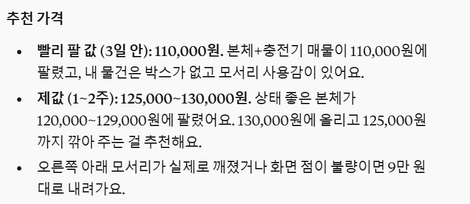
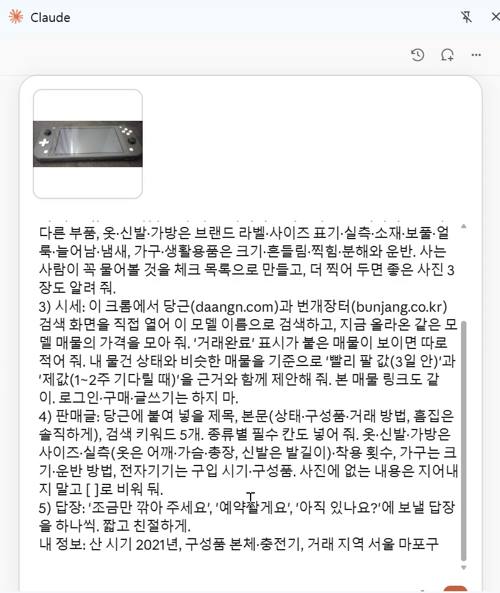
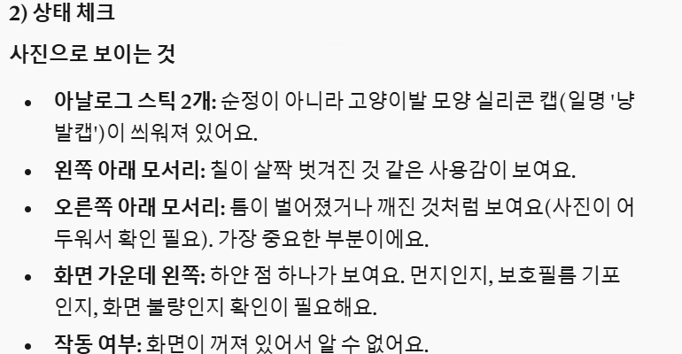
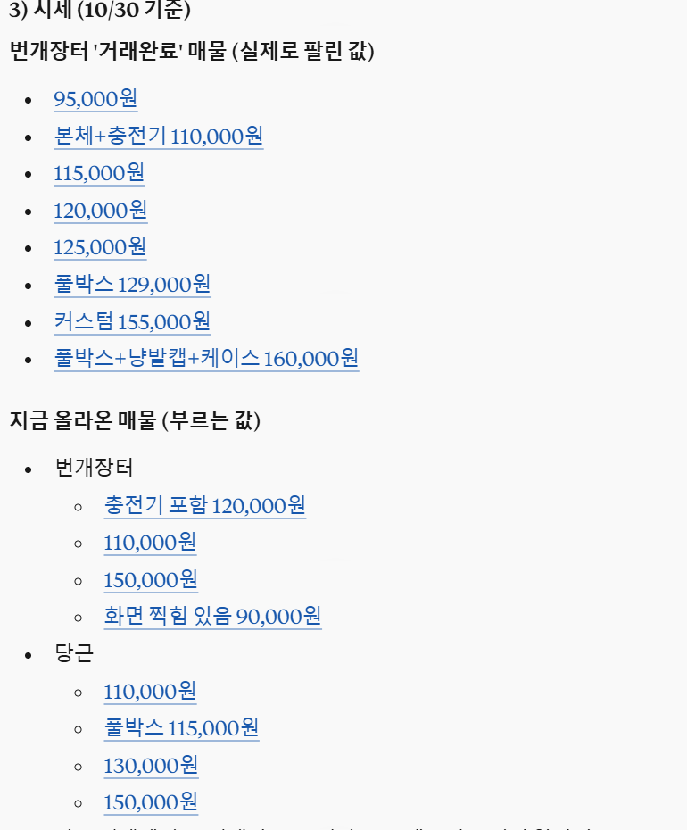
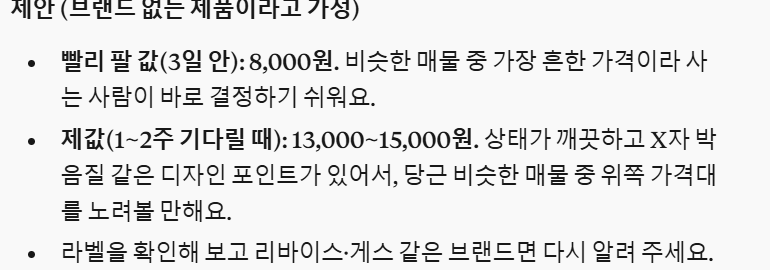
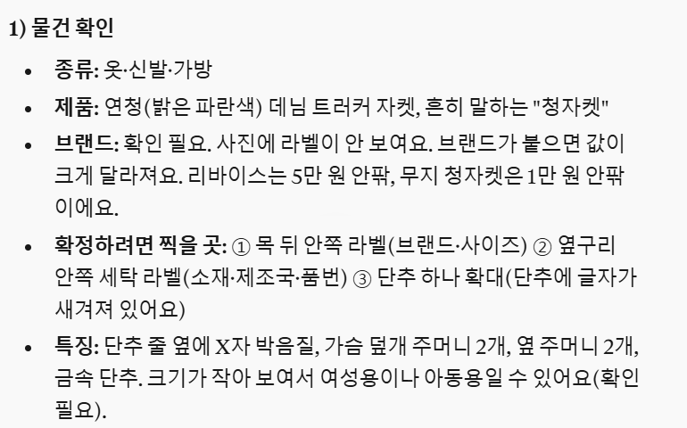
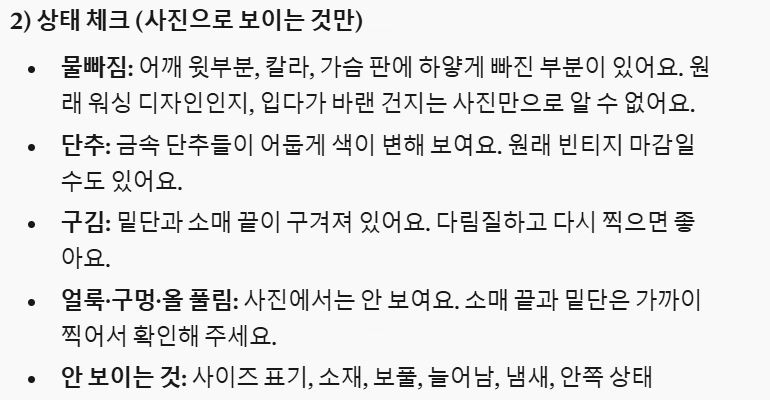
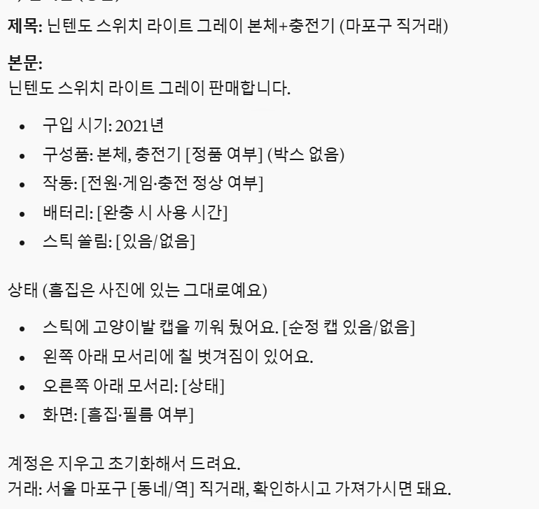
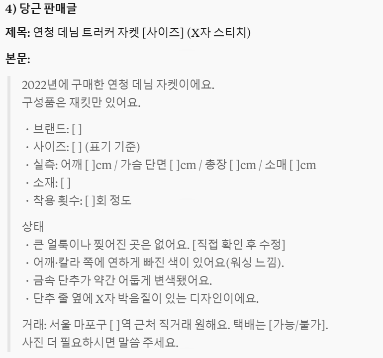
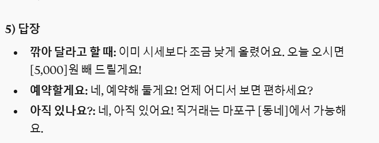

크롬에 '클로드' 확장을 깔고, 팔 물건 사진 한 장과 아래 요청 문장을 넣으면 돼요. 클로드가 물건 종류(게임기·옷·가구 등)에 맞춰 모델과 흠집을 짚고, 당근·번개장터 검색 화면을 직접 열어 같은 물건 값을 모은 뒤 '빨리 팔릴 것 같은 가격'과 '제값 받을 것 같은 가격'을 나눠 줘요. 판매글과 네고·예약 답장까지 써 주고, 글은 내가 직접 붙여 넣어 올려요.

크롬 웹 스토어에서 'Claude'를 찾아 게시자가 claude.com인지 확인하고 'Chrome에 추가'를 눌러요. 내 클로드 계정 연결을 승인하면, 툴바의 클로드 아이콘을 눌러 옆 창을 열 수 있어요.
옆 창 입력칸에 물건 사진을 붙여 넣고(+ 버튼도 돼요), 아래 '복사해서 쓰기'의 문장을 붙여 넣어요. 맨 끝 [ ] 칸(산 시기·구성품·거래 지역)만 내 것으로 바꿔서 보내요.

먼저 물건 종류를 정하고 기종(옷이면 제품)과 색을 읽어요. 흠집·얼룩·사용감은 위치와 함께 적고, 종류별로 볼 것(기기는 부품·작동, 옷은 라벨·사이즈·물빠짐)도 짚어요. 확실하지 않은 건 '확인 필요'로 남기고, 더 찍어 둘 사진 3장도 알려 줘요.

옆 창의 클로드가 지금 탭에서 당근과 번개장터 검색 화면을 열고 같은 모델 매물을 읽어요. 당근 웹 검색엔 거래완료 매물이 나오지 않아서 지금 올라온 값만 봐요. 번개장터는 게임기처럼 팔린 매물이 있으면 실제 팔린 값까지 찾아요(재킷은 팔린 매물이 안 보여 올려 둔 값으로 봤어요). 그동안 탭은 건드리지 마세요.

'빨리 팔릴 것 같은 가격(3일 안)'과 '제값 받을 것 같은 가격(1~2주)'을 근거와 함께 줘요. 팔린다는 보장이 아니라 매물을 보고 추정한 값이에요. 매물 링크를 눌러 한 번 더 확인해 보세요. 화면 속 답에는 '빨리 팔 값·제값'으로 나와요. (맨 위 그림이 실제로 받은 답이에요)

같은 요청 문장에 재킷 사진을 넣으면 종류를 '옷·신발·가방'으로 정하고, 라벨 위치·사이즈 칸·실측 칸을 넣어 줘요. 브랜드가 사진에 안 보이면 '확인 필요'로 두고 목 뒤 라벨을 찍으라고 해요.


[ ] 칸(작동 여부·배터리 등)은 직접 확인해서 채우거나 지운 뒤 붙여 넣어요. 당근·번개장터·중고나라 모두 제목은 제목 칸에, 본문은 설명 칸에 붙여 넣어요. 키워드는 넣는 칸이 없으면 본문 끝에 붙이세요.


'조금만 깎아 주세요', '예약할게요', '아직 있나요?'에 보낼 답장이 하나씩 나와요. 가격·시간 칸만 채워서 보내면 돼요.

사진과 함께 옆 창에 보내기
이 사진 속 물건을 중고로 팔려고 해. 아래 순서대로 해 줘. 1) 물건 확인: 먼저 물건 종류(전자기기 / 옷·신발·가방 / 가구·생활용품 / 책·기타 중 하나)를 정하고, 브랜드·모델명(옷이면 제품명)·색상을 적어 줘. 사진만으로 확실하지 않은 건 '확인 필요'로 적고, 확정하려면 어디를 찍으면 되는지(라벨·모델 번호 등) 알려 줘. 2) 상태 체크: 사진을 자세히 보고 흠집·얼룩·사용감을 위치와 함께 적어 줘. 종류별로 이것도 봐 줘. 전자기기는 작동·구성품·배터리·순정과 다른 부품, 옷·신발·가방은 브랜드 라벨·사이즈 표기·실측·소재·보풀·얼룩·늘어남·냄새, 가구·생활용품은 크기·흔들림·찍힘·분해와 운반. 사는 사람이 꼭 물어볼 것을 체크 목록으로 만들고, 더 찍어 두면 좋은 사진 3장도 알려 줘. 3) 시세: 이 크롬에서 당근(daangn.com)과 번개장터(bunjang.co.kr) 검색 화면을 직접 열어 이 모델 이름으로 검색하고, 지금 올라온 같은 모델 매물의 가격을 모아 줘. '거래완료' 표시가 붙은 매물이 보이면 따로 적어 줘. 내 물건 상태와 비슷한 매물을 기준으로 '빨리 팔 값(3일 안)'과 '제값(1~2주 기다릴 때)'을 근거와 함께 제안해 줘. 본 매물 링크도 같이. 로그인·구매·글쓰기는 하지 마. 4) 판매글: 당근에 붙여 넣을 제목, 본문(상태·구성품·거래 방법, 흠집은 솔직하게), 검색 키워드 5개. 종류별 필수 칸도 넣어 줘. 옷·신발·가방은 사이즈·실측(옷은 어깨·가슴·총장, 신발은 발길이)·착용 횟수, 가구는 크기·운반 방법, 전자기기는 구입 시기·구성품. 사진에 없는 내용은 지어내지 말고 [ ]로 비워 둬. 5) 답장: '조금만 깎아 주세요', '예약할게요', '아직 있나요?'에 보낼 답장을 하나씩. 짧고 친절하게. 내 정보: 산 시기 [ ], 구성품 [ ], 거래 지역 [ ]
같은 대화에 이어서
방금 사진을 더 찍었어. 이 사진까지 보고 상태 체크, 가격, 판매글을 다시 맞춰 줘.
같은 대화에 이어서
같은 내용으로 번개장터에 올릴 글도 써 줘. 제목은 짧게, 본문은 같은 정보로. 올리지는 말고 글만.
도움이 되셨다면
@ai.antenna.kr
에서 바로 쓰는 AI 활용법을 계속 올립니다.
사진: Stupididiot72 / Wikimedia Commons (CC BY-SA 4.0) · NikosLikomitros / Wikimedia Commons (CC0)